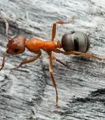
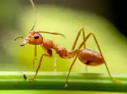

Ants are small, social insects belonging to the family Formicidae. They live in colonies, with different individuals performing specialized tasks. Ants are found worldwide, except for Antarctica, Greenland, Iceland, and some remote islands. Here's a more detailed look Social Structure: Ants are eusocial, meaning they live in organized colonies with a queen, workers, and often soldiers.
They have three body segments (head, thorax, abdomen), six legs, and two antennae. Diversity: There are over 12,000 known species of ants, with estimates suggesting there could be as many as 20,000. Ecological Importance: Ants play various roles in their ecosystems, including seed dispersal, decomposition, and nutrient cycling. Distribution: Ants are found on almost every continent except for Antarctica, Greenland, Iceland, and some remote islands. Evolutionary History: Ants evolved from vespoid wasp ancestors in the Cretaceous period.  Examples of Ant Species: Fire ant, Carpenter ant, Black garden ant, Leaf-cutter ant, and Texas leafcutter ant (Atta texana)